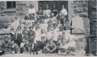
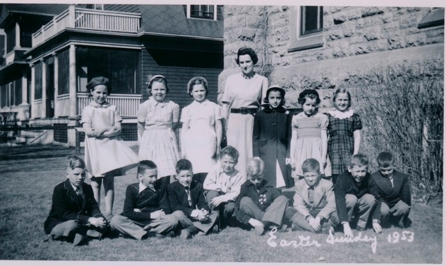
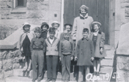
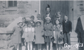
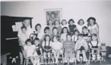

-1-MasterItem.svg)
Stories of Westminster United Church & its People / Page
48
The Importance and Scope
of Our Sunday School Activity, circa 1912 to 1940
Teaching people about Jesus and installing his values in young minds
was evident not only in our missionary activities but in our Children’s
Church, our Sunday School and our supplementary support of organizations
such as Tuxis for boys and CGIT for Girls. We recognized that our future
lay in the hands of our youth.
March of 1924 saw the inauguration of “a children’s church” during the
morning services. Curiously it was not called a Sunday School. Sunday
School happened at 3:00 Sunday afternoons. Typically Sunday Schools
at the time were directed at young adults as well as children.
The Picture is of our Sunday School classes in 1915.
The two Sunday Schools inaugurated during Clarence MacKinnon’s
ministry may have been intended for children but soon found themselves
serving adults as well. This explains how the one created by Sidney Smith
and John Bellingham of our congregation which was located at Ellis and
Beverly Street eventually became Elim Chapel on Portage Avenue,
a family institution for all ages.
The Sunday School in the United Church of Canada today eschews the
direct approach of instilling facts and ideas deliberately and unequivocally
in our children. But in our education programs in David Christie’s time
young children, and youth, were expected to learn the teachings of the Old
and New Testaments; memorizing and receiving stars for effort, and for
attending classes regularly. There was competition between classes for
having the best — perfect — attendance class in the school. Sunday School
was no hit-and-miss affair. Parents were expected to support this regimen,
both the memorizing and the attendance. They were judged as to how they
Table
of Contents

Beginner’s Deptartment, 1953


Miss Coutt’s class

Mabel McCartney's class

Mrs. Hilton Harper's class